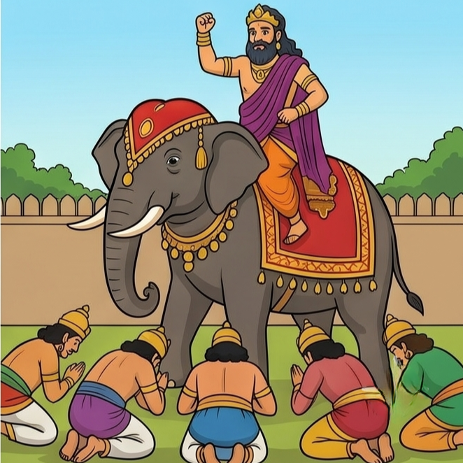

හත්වන පරිච්ඡේදය
සතුරන් පරාජය කර ජයග්රහණය කිරීම
කුමරියට සමාව දුන් කුස රජු, තම සැබෑ ස්වරූපයෙන් මංගල හස්තියා පිට නැඟී යුද බිමට ගොස් මහත් වූ "සීහනාදයක්" කළේය. ඔහුගේ අභීත භාවයට සහ අසමසම තේජසට බිය වූ සතුරු රජවරුන් හත්දෙනා දණින් වැටී යටත් වූහ. කුස රජු ඔවුන්ට සමාව දී, ප්රභාවතී කුමරිය සමඟ නැවතත් සතුටින් තම රාජධානියට පිටත් විය. රූපයට වඩා ගුණය සහ ප්රඥාව උතුම් බව මේ ජාතක කතාවෙන් පැහැදිලි කෙරේ.
-අවසානයි.-